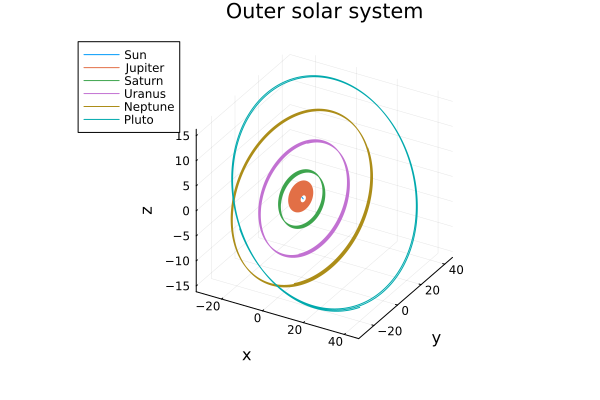

Simulating the Outer Solar System
Data
The chosen units are masses relative to the sun, meaning the sun has mass $1$. We have taken $m_0 = 1.00000597682$ to take account of the inner planets. Distances are in astronomical units, times in earth days, and the gravitational constant is thus $G = 2.95912208286 × 10^{-4}$.
| planet | mass | initial position | initial velocity |
|---|---|---|---|
| Jupiter | $m_1 = 0.000954786104043$ | [-3.5023653, -3.8169847, -1.5507963] | [0.00565429, -0.00412490, -0.00190589] |
| Saturn | $m_2 = 0.000285583733151$ | [9.0755314, -3.0458353, -1.6483708] | [0.00168318, 0.00483525, 0.00192462] |
| Uranus | $m_3 = 0.0000437273164546$ | [8.3101420, -16.2901086, -7.2521278] | [0.00354178, 0.00137102, 0.00055029] |
| Neptune | $m_4 = 0.0000517759138449$ | [11.4707666, -25.7294829, -10.8169456] | [0.00288930, 0.00114527, 0.00039677] |
| Pluto | $m_5 = 1/(1.3 × 10^8)$ | [-15.5387357, -25.2225594, -3.1902382] | [0.00276725, -0.00170702, -0.00136504] |
The data is taken from the book “Geometric Numerical Integration” by E. Hairer, C. Lubich and G. Wanner.
import OrdinaryDiffEq as ODE
using ModelingToolkit: System, t_nounits as t, D_nounits as D, @mtkbuild, @variables
using Symbolics: gradient
using Plots: plot, plot!
G = 2.95912208286e-4
M = [
1.00000597682,
9.54786104043e-4,
2.85583733151e-4,
4.37273164546e-5,
5.17759138449e-5,
1 / 1.3e8,
]
planets = ["Sun", "Jupiter", "Saturn", "Uranus", "Neptune", "Pluto"]
pos = [
0.0 -3.5023653 9.0755314 8.310142 11.4707666 -15.5387357
0.0 -3.8169847 -3.0458353 -16.2901086 -25.7294829 -25.2225594
0.0 -1.5507963 -1.6483708 -7.2521278 -10.8169456 -3.1902382
]
vel = [
0.0 0.00565429 0.00168318 0.00354178 0.0028893 0.00276725
0.0 -0.0041249 0.00483525 0.00137102 0.00114527 -0.00170702
0.0 -0.00190589 0.00192462 0.00055029 0.00039677 -0.00136504
]
tspan = (0.0, 200_000.0)(0.0, 200000.0)The N-body problem's Hamiltonian is
\[H(p,q) = \frac{1}{2} ∑_{i=0}^N \frac{p_i^T p_i}{m_i} - G ∑_{i=1}^N ∑_{j=0}^{i-1} \frac{m_i m_j}{\left\| q_i - q_j \right\|}\]
where each $q_i$ and $p_i$ is a 3-dimensional vector describing the planet's position and momentum, respectively.
Here, we want to solve for the motion of the five outer planets relative to the sun, namely, Jupiter, Saturn, Uranus, Neptune, and Pluto.
const ∑ = sum
const N = 6
@variables u(t)[1:3, 1:N]
u = collect(u)
potential = -G *
∑(
i -> ∑(j -> (M[i] * M[j]) / √(∑(k -> (u[k, i] - u[k, j])^2, 1:3)), 1:(i - 1)),
2:N
)\[ \begin{equation} - 0.00029591 ~ \left( \frac{3.3636 \cdot 10^{-13}}{\sqrt{\left( - u\_{1,4}\left( t \right) + u\_{1,6}\left( t \right) \right)^{2} + \left( - u\_{2,4}\left( t \right) + u\_{2,6}\left( t \right) \right)^{2} + \left( - u\_{3,4}\left( t \right) + u\_{3,6}\left( t \right) \right)^{2}}} + \frac{3.9828 \cdot 10^{-13}}{\sqrt{\left( - u\_{1,5}\left( t \right) + u\_{1,6}\left( t \right) \right)^{2} + \left( - u\_{2,5}\left( t \right) + u\_{2,6}\left( t \right) \right)^{2} + \left( - u\_{3,5}\left( t \right) + u\_{3,6}\left( t \right) \right)^{2}}} + \frac{2.1968 \cdot 10^{-12}}{\sqrt{\left( - u\_{1,3}\left( t \right) + u\_{1,6}\left( t \right) \right)^{2} + \left( - u\_{2,3}\left( t \right) + u\_{2,6}\left( t \right) \right)^{2} + \left( - u\_{3,3}\left( t \right) + u\_{3,6}\left( t \right) \right)^{2}}} + \frac{7.3445 \cdot 10^{-12}}{\sqrt{\left( - u\_{1,2}\left( t \right) + u\_{1,6}\left( t \right) \right)^{2} + \left( - u\_{2,2}\left( t \right) + u\_{2,6}\left( t \right) \right)^{2} + \left( - u\_{3,2}\left( t \right) + u\_{3,6}\left( t \right) \right)^{2}}} + \frac{2.264 \cdot 10^{-9}}{\sqrt{\left( - u\_{1,4}\left( t \right) + u\_{1,5}\left( t \right) \right)^{2} + \left( - u\_{2,4}\left( t \right) + u\_{2,5}\left( t \right) \right)^{2} + \left( - u\_{3,4}\left( t \right) + u\_{3,5}\left( t \right) \right)^{2}}} + \frac{7.6924 \cdot 10^{-9}}{\sqrt{\left( - u\_{1,1}\left( t \right) + u\_{1,6}\left( t \right) \right)^{2} + \left( - u\_{2,1}\left( t \right) + u\_{2,6}\left( t \right) \right)^{2} + \left( - u\_{3,1}\left( t \right) + u\_{3,6}\left( t \right) \right)^{2}}} + \frac{1.2488 \cdot 10^{-8}}{\sqrt{\left( - u\_{1,3}\left( t \right) + u\_{1,4}\left( t \right) \right)^{2} + \left( - u\_{2,3}\left( t \right) + u\_{2,4}\left( t \right) \right)^{2} + \left( - u\_{3,3}\left( t \right) + u\_{3,4}\left( t \right) \right)^{2}}} + \frac{1.4786 \cdot 10^{-8}}{\sqrt{\left( - u\_{1,3}\left( t \right) + u\_{1,5}\left( t \right) \right)^{2} + \left( - u\_{2,3}\left( t \right) + u\_{2,5}\left( t \right) \right)^{2} + \left( - u\_{3,3}\left( t \right) + u\_{3,5}\left( t \right) \right)^{2}}} + \frac{4.175 \cdot 10^{-8}}{\sqrt{\left( - u\_{1,2}\left( t \right) + u\_{1,4}\left( t \right) \right)^{2} + \left( - u\_{2,2}\left( t \right) + u\_{2,4}\left( t \right) \right)^{2} + \left( - u\_{3,2}\left( t \right) + u\_{3,4}\left( t \right) \right)^{2}}} + \frac{4.9435 \cdot 10^{-8}}{\sqrt{\left( - u\_{1,2}\left( t \right) + u\_{1,5}\left( t \right) \right)^{2} + \left( - u\_{2,2}\left( t \right) + u\_{2,5}\left( t \right) \right)^{2} + \left( - u\_{3,2}\left( t \right) + u\_{3,5}\left( t \right) \right)^{2}}} + \frac{2.7267 \cdot 10^{-7}}{\sqrt{\left( - u\_{1,2}\left( t \right) + u\_{1,3}\left( t \right) \right)^{2} + \left( - u\_{2,2}\left( t \right) + u\_{2,3}\left( t \right) \right)^{2} + \left( - u\_{3,2}\left( t \right) + u\_{3,3}\left( t \right) \right)^{2}}} + \frac{4.3728 \cdot 10^{-5}}{\sqrt{\left( - u\_{1,1}\left( t \right) + u\_{1,4}\left( t \right) \right)^{2} + \left( - u\_{2,1}\left( t \right) + u\_{2,4}\left( t \right) \right)^{2} + \left( - u\_{3,1}\left( t \right) + u\_{3,4}\left( t \right) \right)^{2}}} + \frac{5.1776 \cdot 10^{-5}}{\sqrt{\left( - u\_{1,1}\left( t \right) + u\_{1,5}\left( t \right) \right)^{2} + \left( - u\_{2,1}\left( t \right) + u\_{2,5}\left( t \right) \right)^{2} + \left( - u\_{3,1}\left( t \right) + u\_{3,5}\left( t \right) \right)^{2}}} + \frac{0.00028559}{\sqrt{\left( - u\_{1,1}\left( t \right) + u\_{1,3}\left( t \right) \right)^{2} + \left( - u\_{2,1}\left( t \right) + u\_{2,3}\left( t \right) \right)^{2} + \left( - u\_{3,1}\left( t \right) + u\_{3,3}\left( t \right) \right)^{2}}} + \frac{0.00095479}{\sqrt{\left( - u\_{1,1}\left( t \right) + u\_{1,2}\left( t \right) \right)^{2} + \left( - u\_{2,1}\left( t \right) + u\_{2,2}\left( t \right) \right)^{2} + \left( - u\_{3,1}\left( t \right) + u\_{3,2}\left( t \right) \right)^{2}}} \right) \end{equation} \]
Hamiltonian System
NBodyProblem constructs a second order ODE problem under the hood. We know that a Hamiltonian system has the form of
\[\dot{p} = -\frac{∂H}{∂q}, \quad \dot{q} = \frac{∂H}{∂p}\]
For an N-body system, we can simplify this as:
\[\dot{p} = -∇ V(q), \quad \dot{q} = M^{-1} p.\]
Thus, $\dot{q}$ is defined by the masses. We only need to define $\dot{p}$, and this is done internally by taking the gradient of $V$. Therefore, we only need to pass the potential function and the rest is taken care of.
eqs = vec(@. D(D(u))) .~ .-gradient(potential, vec(u)) ./ repeat(M, inner = 3)
@mtkbuild sys = System(eqs, t)
prob = ODE.ODEProblem(sys, [vec(u .=> pos); vec(D.(u) .=> vel)], tspan)
sol = ODE.solve(prob, ODE.Tsit5());retcode: Success
Interpolation: specialized 4th order "free" interpolation
t: 862-element Vector{Float64}:
0.0
0.4345623854592078
36.799854016900596
176.34163131372406
382.690519120776
614.6194477495854
884.4395628170241
1220.7074378670611
1580.9665272259003
1955.1053512089456
⋮
199465.49049787674
199536.4801975805
199611.98426501988
199681.57852137068
199756.55994203963
199822.99047482872
199895.81424164862
199965.2002832207
200000.0
u: 862-element Vector{Vector{Float64}}:
[-3.1902382, -10.8169456, -7.2521278, -1.6483708, -1.5507963, 0.0, -25.2225594, -25.7294829, -16.2901086, -3.0458353 … 0.00137102, 0.00483525, -0.0041249, 0.0, 0.00276725, 0.0028893, 0.00354178, 0.00168318, 0.00565429, 0.0]
[-3.190831391666314, -10.816773167663484, -7.251888638015288, -1.6475343823037847, -1.5516242540172815, -2.777762988623252e-10, -25.223301179998256, -25.728985182525822, -16.289512746418094, -3.0437339894169093 … 0.0013712954942851254, 0.004835677090231295, -0.004121794983806699, -3.1048711440018443e-9, 0.002767325672882192, 0.0028892462117755886, 0.0035416394156575887, 0.0016819059109041002, 0.005657137663985553, -2.3461051313643884e-9]
[-3.2404471683728127, -10.802265537292197, -7.231686331683722, -1.5771895617221452, -1.6189355859957832, -2.0208372123355136e-6, -25.285186003585544, -25.687149264852053, -16.239226561453737, -2.8672454535016154 … 0.001394303634473884, 0.00487042202590099, -0.00385633621831226, -2.680106378475263e-7, 0.0027736357411110167, 0.002884724039922527, 0.0035297878482308544, 0.0015747655570174672, 0.005888745382570777, -1.921309316012062e-7]
[-3.4303828779343424, -10.74516779423081, -7.15072643252555, -1.301244547830164, -1.8383676801595175, -4.8816143289477195e-5, -25.519170650825295, -25.523218822219313, -16.038546844505056, -2.1792684033619425 … 0.0014817350594487021, 0.004985104978942055, -0.0027423271043274257, -1.3702159643530005e-6, 0.0027974356928442646, 0.002866986460595974, 0.0034827257015618445, 0.001154656403914592, 0.0066455489447080525, -7.917604343855856e-7]
[-3.7098742735277703, -10.65659861332046, -7.021139630323775, -0.878492347411136, -2.035254218085317, -0.0002446884814165819, -25.854991806822973, -25.270983538436326, -15.719664595507853, -1.1377440804449277 … 0.0016084526060640423, 0.005098162015992431, -0.0008738716149829361, -3.1949387438397884e-6, 0.002831418124044619, 0.00283964305290824, 0.003408605410604255, 0.0005111251766748209, 0.007326981196755438, -1.2539411169062721e-6]
[-4.0219094790412, -10.551203358120938, -6.8617367319847435, -0.38878407011254645, -2.052001850728596, -0.0006651977539873863, -26.21780879670554, -24.97361553757068, -15.330466203468976, 0.05133018801374279 … 0.0017470400995166508, 0.005140225970479248, 0.0013928944632740112, -5.3805348318432e-6, 0.0028678661162884417, 0.0028073371208667676, 0.0033190334453819027, -0.00023488504969310634, 0.0073720168685661065, -1.0783040844196672e-6]
[-4.381896511178932, -10.420876471778765, -6.658492303316204, 0.18917687216089693, -1.786216578564087, -0.0014303095044539695, -26.620222683365302, -24.60941080980342, -14.837921653930868, 1.4317386287539253 … 0.001902878417558826, 0.005070047286626644, 0.003949378657966197, -7.811933036864442e-6, 0.0029079125771996526, 0.0027676821012944663, 0.0032068006047607585, -0.0011165528009844752, 0.006373992979912761, 1.3333848977820395e-7]
[-4.825589096078307, -10.246984830348817, -6.379378458118606, 0.9007997758508709, -1.0689923409344275, -0.002751620310494144, -27.091824548639174, -24.1284320343879, -14.166562053046176, 3.0965253069003906 … 0.002088487437507189, 0.004796826474293542, 0.0063838363576700155, -1.007098554437626e-5, 0.002954234221612498, 0.002715187247731004, 0.0030554254983973456, -0.00220332776809826, 0.003632939858676905, 3.0701424597069595e-6]
[-5.294309537687326, -10.046781966506682, -6.050047497888434, 1.6213601746665107, -0.003414391519810708, -0.004441043353903599, -27.55990423795232, -23.58039631849429, -13.380015421899277, 4.737596314939376 … 0.002276073794053405, 0.004274632150840933, 0.0072428322239092196, -1.075502968971954e-5, 0.002999407694490345, 0.002655222795366012, 0.002879902195620293, -0.0033019655688493756, -0.0004903914325280742, 7.331549023611325e-6]
[-5.773207577227177, -9.823923426171882, -5.676761143107515, 2.286019522536642, 1.0972595215565843, -0.006168115233424088, -28.005002974439684, -22.97617492268973, -12.494020192782468, 6.198061172266256 … 0.0024578386745961987, 0.003494029014598652, 0.005799635009446765, -9.167002526385648e-6, 0.0030414241465302814, 0.002588944128493176, 0.0026839681748991673, -0.004306596357028957, -0.004661560967305507, 1.1613003338739884e-5]
⋮
[-15.12410908701454, 7.432735745301975, 7.078257292633362, -0.3141301198584108, -0.24540529291952198, -0.2476386841566414, -14.892147671915374, 19.53034269702101, 16.077308202229368, -1.6481824324636793 … -0.001156888213232534, -0.005130700608179946, 0.013407703707020862, -1.382818703542993e-5, 0.0017143220371182578, -0.0022717203298508112, -0.0038074657995734217, 0.0003437529355424534, -0.0007856900403711836, 7.119866920225412e-6]
[-15.114529109395775, 7.495065073008563, 7.045263405278536, -0.46567941118541134, 0.12438468447392356, -0.2480372531755797, -14.744719225907874, 19.67278663465875, 15.993321203642392, -2.011319113031002 … -0.0012092591309786711, -0.005098567259166476, 0.00904579346857727, -9.66958039760752e-6, 0.0017031575292025107, -0.0022881011266298592, -0.0037911445832118002, 0.0005714376642165127, -0.010737903757370524, 1.6557157355510892e-5]
[-15.103965780278477, 7.5608785394331, 7.00836960950695, -0.6264534362110551, 0.2848815358893624, -0.2482389009141898, -14.587556945764051, 19.823039964380275, 15.899920088910937, -2.394701766178053 … -0.0012647764902201197, -0.00505514535836696, -0.0011838690885756298, 8.841389940725656e-8, 0.0016912837668678878, -0.0023053814786459207, -0.003772809842923962, 0.0008108765871405786, -0.014711995408307288, 2.0283255776691892e-5]
[-15.093889141770992, 7.621099385146331, 6.972723227478134, -0.7740096622713764, 0.12653432988295046, -0.24813242002081481, -14.442373223200123, 19.96038448714458, 15.810123535390693, -2.74487597969354 … -0.001315766988044715, -0.005006855636107209, -0.010351885034530807, 8.831117168957212e-6, 0.0016803402878181075, -0.0023211783979449553, -0.0037550210213000723, 0.0010287392908537713, -0.009886704917287477, 1.561398545772355e-5]
[-15.082668954861932, 7.685504208610309, 6.932562132579176, -0.9320312362259663, -0.27635669628898535, -0.24779608582034546, -14.285609615088712, 20.10711912160138, 15.709412298373667, -3.11807712556876 … -0.001370493708619972, -0.004946161895997564, -0.013705219234134217, 1.2018767134250106e-5, 0.0016685510096684502, -0.0023380566424762465, -0.003734901804507747, 0.0012600727099087085, 0.0016774342652748082, 4.506701603675863e-6]
[-15.072414610846586, 7.742147238605893, 6.895464840551025, -1.070977942261062, -0.6258292529470675, -0.24750545516421393, -14.146431568417453, 20.236037053100723, 15.616764636889698, -3.4446617665443253 … -0.0014187844616184398, -0.004885073854700047, -0.00895045916660477, 7.464477161732999e-6, 0.0016581076070263825, -0.002352886762147957, -0.0037162510777472247, 0.001461789362797888, 0.011340574778246345, -4.777129809404719e-6]
[-15.060836190135806, 7.803787879529455, 6.853166480454366, -1.2219175065558343, -0.7733620417092507, -0.24741207377735516, -13.993548654773862, 20.376184913429686, 15.511522491772261, -3.797741073588689 … -0.0014714996944132387, -0.004810417747650582, 0.001482095304627524, -2.514458677314824e-6, 0.0016466609203464478, -0.002369010027551937, -0.003694915209145801, 0.0016791000982529546, 0.014834100555749768, -8.174837854902928e-6]
[-15.049477604615099, 7.862074021864434, 6.8112839781425984, -1.3641657259081945, -0.6076664688204828, -0.247615870438884, -13.847584925183913, 20.508564269361266, 15.407685075178028, -4.128836796044427 … -0.0015214964984595091, -0.004731996561951815, 0.01045258340238374, -1.1098672288479384e-5, 0.0016357565403834489, -0.002384240695114182, -0.003673722655580633, 0.0018821634199228596, 0.00954892159656281, -3.1867818493570776e-6]
[-15.043661216413197, 7.891142321036539, 6.789699419256379, -1.434864646577254, -0.4374373512985582, -0.24780141893095825, -13.774270500566551, 20.574531691519905, 15.35430249057177, -4.292784093025354 … -0.0015464829810243872, -0.004690051192150938, 0.012900251667813221, -1.3446119909957013e-5, 0.001630288386284411, -0.0023918308653056533, -0.0036627770591481884, 0.0019824632849923503, 0.004619841645357415, 1.490677636037934e-6]plt = plot(xlab = "x", ylab = "y", zlab = "z", title = "Outer solar system")
for i in 1:N
plot!(plt, sol, idxs = (u[:, i]...,), lab = planets[i])
end
plt